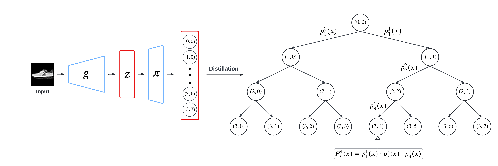
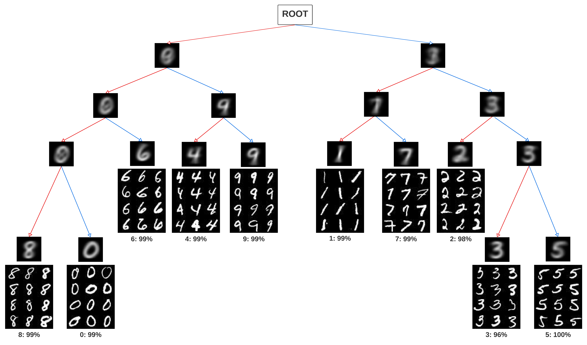
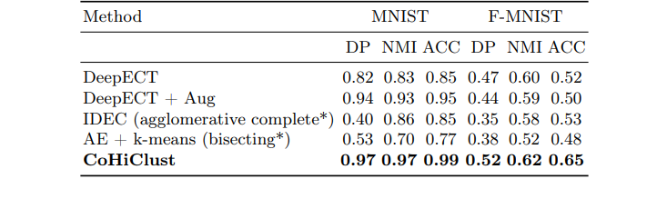
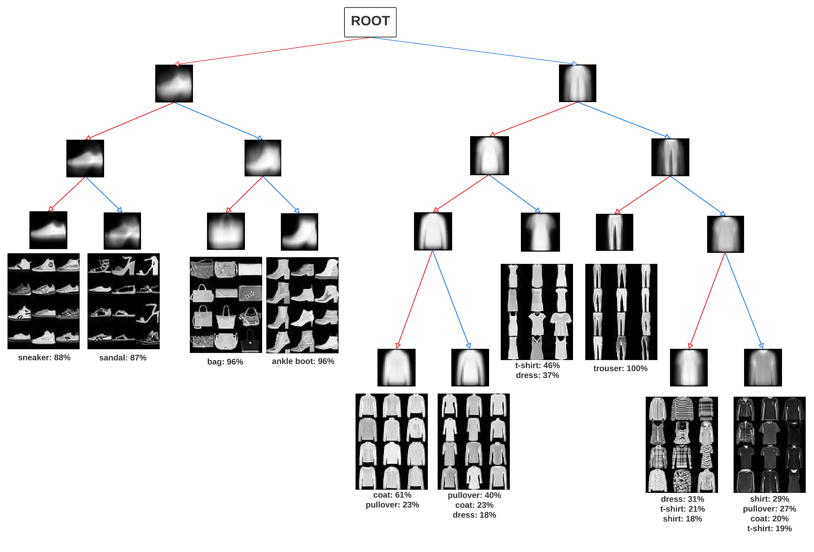
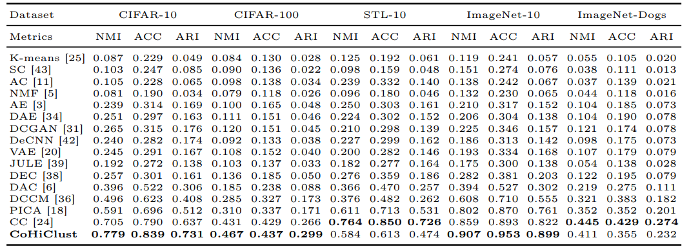
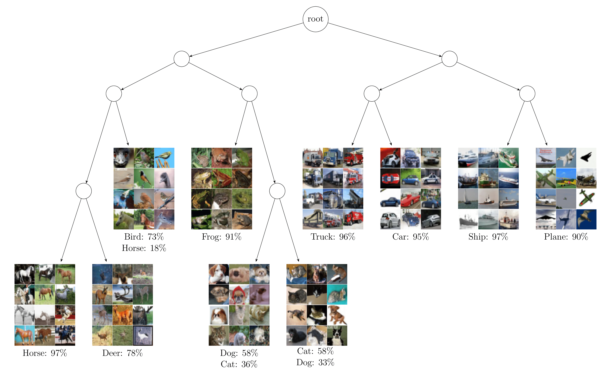

In this post, I would like to introduce you to CoHiClust, a Contrastive Hierarchical Clustering model based on deep neural networks, which can be applied to typical image data. CoHiClust distills the base network into a binary tree without access to any labeled data. CoHiClust outperforms the established and popular Agglomerative Clustering and generates a hierarchical structure of clusters consistent with human intuition and image semantics.
You can access the full paper of CoHiClust by clicking here.
For those who are interested in exploring the code, data, and additional resources associated with this study, you can find them in my GitHub repository here.
Clustering
Clustering, a fundamental branch of unsupervised learning, is often one of the first steps in data analysis, which finds applications in anomaly detection [1], document clustering [2], bioinformatins [3] and many more. Initial approaches use representations taken from pre-trained models [4, 5] or employ autoencoders in joint training of the representation and the flat clustering model [6] or hierarchical clustering model [7]. Recent models designed to image data frequently follow the self-supervised learning principle, where the representation is trained on pairs of similar images generated automatically by data augmentations [8, 9]. Since augmentations used for image data are class-invariant, the latter techniques of ten obtain a very high similarity to the ground truth classes. However, we should be careful when comparing clustering techniques only by inspecting their accuracy with ground truth classes because the objective of clustering is not to perform classification.
Objective of Clustering
So what’s the objective of clustering then? The primary objective of clustering is to discover structures and patterns in high-dimensional unlabeled data and group together data points with similar patterns. The above procedure reduces the complexity, facilitates the interpretation, and grants important insights into data. Let’s examine how much meaningful information a clustering algorithm can deliver when applied to a subset of the most widely recognized datasets in the field of computer vision and machine learning — ImageNet-10.
 Fig. 1. Information delivered by hierarchical clustering CoHiClust for ImageNet-10.
It is evident that images
with soccer ball are similar to pictures with oranges because of their shapes.
Dogs are more similar to leopards than to penguins, which is reflected in the
constructed hierarchy. The same hold when analyzing the leafs representing cars,
trucks and ships. Looking at the first hierarchy level, we observe a distinction on
the right sub-tree representing machines and left-sub-tree dominated by animals.
Moreover, balls and oranges are separated from the animal branch.
Fig. 1. Information delivered by hierarchical clustering CoHiClust for ImageNet-10.
It is evident that images
with soccer ball are similar to pictures with oranges because of their shapes.
Dogs are more similar to leopards than to penguins, which is reflected in the
constructed hierarchy. The same hold when analyzing the leafs representing cars,
trucks and ships. Looking at the first hierarchy level, we observe a distinction on
the right sub-tree representing machines and left-sub-tree dominated by animals.
Moreover, balls and oranges are separated from the animal branch.
The algorithm reduces high-dimensional images into a hierarchy of groups that describe images and provides information that summarizes the dataset from high to low-level information. The hierarchy of groups is consistent with human intuition and image semantics, see Figure 1.
Thanks to the clustering we can understand that ImageNet-10 consists of two super-groups which can be categorazied as ‘machines’ and ’not machines’, four super-groups which can be catogorazied as ‘flying machines’, ’not flying machines’, ‘animals’ and ’not animals’, see Figure 2.
Hierarchical clustering
Hierarchical clustering organizes data into a tree-like structure where clusters are nested within each other, while flat clustering forms non-overlapping clusters without any hierarchy.
Hierarchical clustering can provide more detailed information about the relationships between data points, as it captures the hierarchical structure of the data. This can be useful for exploring nested relationships and understanding similarities at different levels of granularity.
Hierarchical clustering groups data based on similarity, forming a hierarchical structure of clusters. Approaches to hierarchical clustering typically belong to two main groups.
- Agglomerative: This is a “bottom-up” approach: Each observation starts in its own cluster, and pairs of clusters are merged as one moves up the hierarchy.
- Divisive: This is a “top-down” approach: All observations start in one cluster, and splits are performed recursively as one moves down the hierarchy.
CoHiClust
CoHiClust by backpropagation, jointly learns deep representation using SimCLR [10] framework and performs hierarchical clustering in a top-down manner. There are three key components of CoHiClust, see Figure 3.
- The backbone neural network $f(.)$ that generates the representation used by the hierarchical clustering head.
- The hierarchical clustering head $\pi(.)$, which assigns data points to clusters by a sequence of decisions.
- The regularized contrastive loss, which allows for training the whole framework.
Backbone network
CoHiClust utilizes ResNet architectures as its backbone network. This component projects images into an internal representation, which is then utilized by the clustering network. CoHiClust can rely on various architecture options. You can observe how change of backbone network influences the final quality of clustering in the full paper.
Hierarchical clustering head
CoHiClust depends on a soft binary decision tree to create a hierarchical structure, where leaves play the role of clusters (similar to [11] ). In contrast to hard decision trees, every internal node defines the probability of taking a left/right branch. The final assignment of the input examples to clusters involves partial decisions made by the internal nodes. Aggregating these decisions induces the posterior probability over leaves
Each inner node is model by one neuron from linear layer $\pi(z) = [\sigma (w_1^T z + b_1), \ldots, \sigma (w_K^T z + b_K)]$, where $w_n \in \R^N$ and $b_n \in \R$ are trainable parameters of $\pi$ and $\sigma$ is sigmoid function.
 Fig. 4: Illustration of distilling neurnal network into soft decision tree. The output neurons of the projection head $\pi$ (appended to the base network $g$) model decisions made by the internal tree nodes. The final assignment of the input example to the cluster (leaf node) is performed by aggregating edge probabilities located on the path from the root to this leaf
With $\pi$ output we can define a probability distribution of assigning data to clusters on all levels of the tree, see Figure 4
Loss functions
CoHiClust is trained with hierarchical contrastive loss function designed for trees - CoHiLoss. CoHiClust builds hierarchical structure by maximizing the likelihood that similar data points will follow the same path. The more similar data points, the longer they should be routed through the same nodes. Clustering works in unsupervised setting, therefor CoHiClust uses a self-supervised approach and generates images using data augmentations (SimCLR).
Consider two data points $x_1, x_2$ with posterior probabilities $P_t(x_1), P_t(x_2)$ at level $t$. The probability they reach the same node is $P_t(x_1) \cdot P_t(x_2) = \sum_{i=0}^{2^t-1} P_t^i(x_1) P_t^i(x_2)$, maximal if both are identical one-hot vectors. Let’s Define the similarity score $s_t(x_1,x_2) = \sqrt{P_t(x_1) \cdot P_t(x_2)} = \sum_{i=0}^{2^t-1} \sqrt{P_t^i(x_1) P_t^i(x_2)}$. Let’s aggregate it over all levels of the tree, the final similarity function is $s(x_1,x_2) = \sum_{t=0}^{T-1} s_t(x_1,x_2)$.
In training, consider a minibatch $ [{x_j}]_{j=1}^N $ and its augmented view $ \tilde{x_j} $. Each $(x_j,\tilde{x}_j)$ pair is treated as positive, maximizing their similarity score to encourage them to share the same leaf node. Other pairs are treated as negative to avoid degenerate solutions, yielding the hierarchical contrastive loss:
$$ CoHiLossNeg = \frac{1}{N(N-1)} \sum_{j=1}^N \sum_{i\neq j} s(x_j,\tilde{x}_{i}) $$
$$ CoHiLossPos = \frac{1}{N} \sum_{j=1}^N s(x_j,\tilde{x}_{j}) $$
$$ CoHiLoss = -CoHiLossNeg + CoHiLossPos $$
Minimizing this loss maximizes the likelihood of similar data points sharing the same path (second term) and minimizes the likelihood of dissimilar ones being grouped together.
Results
CoHiClust was evaluated on several datasets of color images of various resolutions and with a diverse number of classes. In addition to reporting similarity scores with ground-truth partitions, the constructed hierarchies were analyzed, which is equally important in practical use-cases.
To measure the similarity of the constructed partition with the ground truth, four widely-used clustering metrics were applied: normalized mutual information (NMI), clustering accuracy (ACC), adjusted rand index (ARI), and dendrogram purity (DP).
 Fig. 5: Tree hierarchy constructed for MNIST. Observe that neighboring leaves contain images of visually similar classes, e.g. 8 and 0; 4 and 9; 1 and 7. Such a property holds also for nodes in the upper levels of the tree – the left sub-tree contain digits with circular shapes, while the digits located in the right sub-tree consist of lines.
Comparison with deep hierarchical clustering methods
In authors knowledge, DeepECT [7] is the only hierarchical clustering method based on deep neural networks. Following their experimental setup, we report the results on two popular image datasets, MNIST and F-MNIST, and consider classical hierarchical algorithms evaluated on the latent representation created by the autoencoder and IDEC [12]. The results summarized in Table 1 demonstrate that CoHiClust outperforms all baselines on both MNIST and F-MNIST datasets in terms of all metrics. Interestingly, DeepECT benefits from data augmentation in the case of MNIST, while on F-MNIST it deteriorates its performance. All methods except CoHiClust and DeepECT failed completely to create a hierarchy recovering true classes (see the DP measure), which confirms that there is a lack of powerful hierarchical clustering methods based on neural networks.
Table 1: Comparison with hierarchical models in terms of DP, NMI and ACC (higher is better). 
While examining the MNIST and F-MNIST datasets, it’s apparent that CoHiClust produces clusters with a sensible structure. This structure is in line with our expectations and the inherent semantics of the images. Figure 5 and Figure 6 provide visual confirmation of this alignment.
 Fig. 6: Tree hierarchy generated by CoHiClust for F-MNIST (images in the nodes denote mean images in each sub-tree). The right sub-tree contains clothes while the other items (shoes and bags) are placed in the left branch. Looking at the lowest hierarchy level, we have clothes with long sleeves grouped in the neighboring leaves. The same holds for clothes with designs. Observe that CoHiClust assigned white-colored t-shirts and dresses to the same cluster, while trousers are in the separate one. Small shoes such as sneakers or sandals are considered similar (neighboring leaves) and distinct from ankle shoes. Concluding, CoHiClust is able to retrieve meaningful information about image semantics, which is complementary to the ground truth classification.
Comparision with Agglomerative Hierarchical Clustering
The top layer responsible for constructing a decision tree is an important component of CoHiClust and cannot be replaced by alternative hierarchical clustering methods. For this purpose, a backbone network is first trained with a typical self-supervised SimCLR technique. Next, agglomerative clustering is applied to the resulting representation. As seen in Table 2, agglomerative clustering yields very low results, indicating that joint optimization of the backbone network and clustering tree using the proposed CoHiLoss is a significantly better choice. Consequently, the representation taken from a typical self-supervised learning model does not provide a representation that can be clustered accurately using simple methods.
Comparision with deep flat clustering methods
CoHiClust was evaluated on typical bemchmark datasets: CIFAR10, CIFAR-100, STL-10, ImageNet-Dogs, and ImageNet-10. The results presented in Table 3 show that CoHiClust outperforms the comparative methods in 3 out of 5 datasets. It gives extremely good results on CIFAR-10 and ImageNet-10, but is notably worse than CC on STL-10. Nevertheless, one should keep in mind that CoHiClust is the only hierarchical method in this comparison, and constructing a clustering hierarchy, which resembles ground truth classes, is more challenging than directly generating a flat partition.
Table 3: Comparison with flat clustering methods on datasets of color images. 
When analyzing the CIFAR10 and ImageNet-10 datasets, it becomes apparent that CoHiClust generates cluster structures that exhibit a high level of coherence, effectively capturing the underlying patterns within the data. This observation is particularly noteworthy as it aligns closely with our intuitive understanding of how these datasets should be organized. By examining Figure 1 and Figure 7, we can observe how the clusters formed by CoHiClust accurately reflect the semantic relationships present in the images, further reinforcing the validity of the clustering results.
 Fig. 7: A tree hierarchy generated by CoHiClust for CIFAR-10. There is an evident distinction into animals (left branch) and machines (right branch). Moreover, all neighbor leaves represent visually similar classes (horses and deers, dogs and cats, trucks and cars, ships and planes). Images with frogs seem to be visually similar to cats and dogs, which leads to their placement in the neighbor leaves (however cats and dogs are connected by a stronger relationship). Interestingly, a small portion of images with horses’ heads are grouped together with birds because of their similar shapes. Although there is a slight mismatch between dogs and cats classes, the left leaf contains pets with bright fur photographed in front, while the right leaf includes animals with dark fur presented from the side, which coincides with our intuition.
Conclusions
CoHiClust a contrastive hierarchical clustering suits well to clustering of large-scale image databases. The hierarchical structure constructed by CoHiClust provides significantly more information about the data than typical flat clustering models. In particular, we can inspect the similarity between selected groups by measuring their distance in the hierarchy tree and, in consequence, find super-clusters. Experimental analysis performed on typical clustering benchmarks confirms that the produced partitions are highly similar to ground-truth classes. At the same time, CoHiClust allows us to discover important patterns that have not been encoded in the class labels.
References
[10] Chen, T., Kornblith, S., Norouzi, M., Hinton, G.: A simple framework for contrastive learning of visual representations. In: III, H.D., Singh, A. (eds.) Proceedings of the 37th International Conference on Machine Learning. Proceedings of Machine Learning Research, vol. 119, pp. 1597–1607. PMLR (13–18 Jul 2020), https://proceedings.mlr.press/v119/chen20j.html.